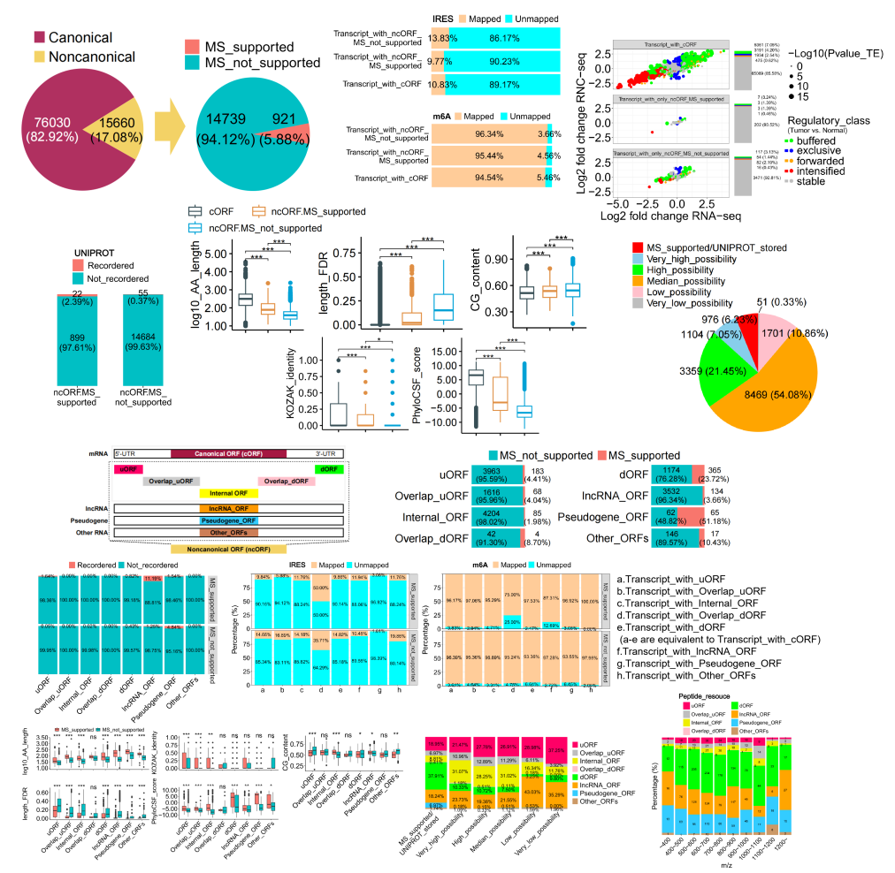
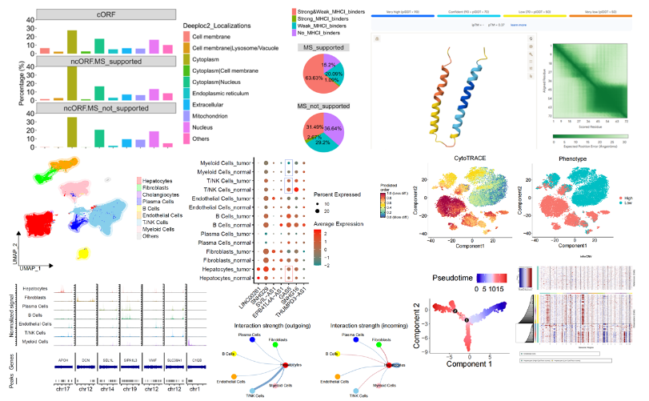
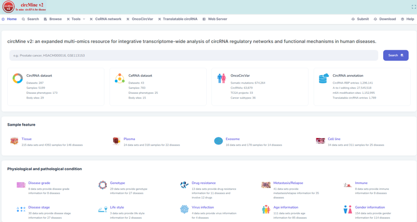

肝癌组学临床研究
重点研究非经典开放阅读框翻译蛋白的临床作用，构建肝细胞癌非经典开放阅读框多维图谱。
当前阶段重点从事肝癌组学临床研究，围绕非经典开放阅读框翻译蛋白进行多维特征分析，同时主导多个在线组学分析平台后端开发。
重点研究非经典开放阅读框翻译蛋白的临床作用，构建肝细胞癌非经典开放阅读框多维图谱。
除基本统计外，完成亚细胞定位、信号肽、保守结构域、免疫原性、跨膜结构等分子特征预测与综合分析。
筛选具有肿瘤、复发、耐药上调且不良预后特性的非经典开放阅读框及其转录本和编码微肽，并结合单细胞转录组数据进行联合分析。
主导 ExpOmics 和 circMine v2 等组学分析平台后端开发工作。ExpOmics 已发表于 Bioinformatics，circMine v2 待发表。

肝癌相关非经典开放阅读框研究与多维特征分析展示。

候选分子与单细胞转录组联合分析相关结果展示。

多组学表达数据标准化与探索分析平台截图。

circMine v2 平台截图。